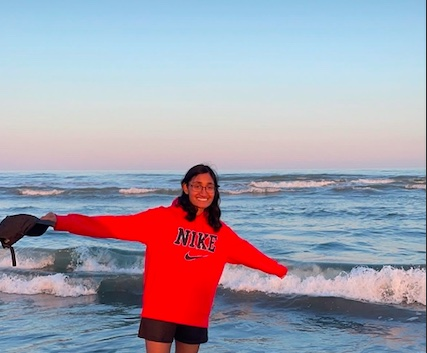

I am a 4th year undergraduate student, majoring in Computer Science at Rutgers University New Brunswick. Previously a pre-med student, I recently discovered my passion for computer science and software engineering, so about a year ago I took the sharp decision to make the switch, and I think it was the best decision of my life. I think with computer science, there is a lot of creativity involved with solving complex problems. I like the freedom and raw creation that comes with writing code and solving problems.